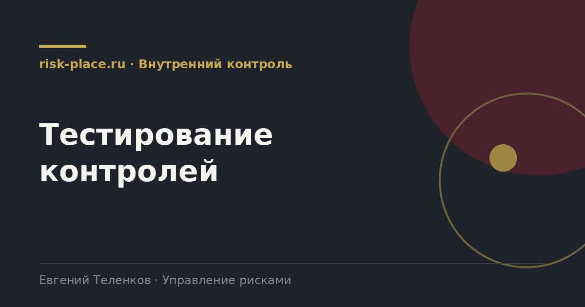

risk-
risk-Зафиксировать описание
- Что именно должно происходить, кто выполняет, на основании чего, какой след остается
Главная · Библиотека · Внутренний контроль · Тестирование контролей
Библиотека · Внутренний контроль
Описанный контроль и работающий контроль это два разных состояния. Различить их можно только тестом.

Первый вопрос, способна ли процедура в принципе предотвратить или выявить ошибку, если она выполняется как описано. Это тест дизайна. Он проводится за столом, чтением описания процесса и одним-двумя примерами.
Второй вопрос, выполняется ли она фактически, всегда ли и правильно ли. Это тест операционной эффективности. Он требует выборки за период и проверки следов выполнения. Контроль с хорошим дизайном и нулевым выполнением не работает, как и контроль, который выполняется идеально, но не способен поймать ошибку.
Практика внутреннего аудита, ориентир для нефинансового сектора.
| Частота выполнения контроля | Число операций за год | Разумный объем выборки |
|---|---|---|
| Ежедневный | свыше 250 | 25 наблюдений |
| Еженедельный | около 52 | 10 наблюдений |
| Ежемесячный | 12 | 3-5 наблюдений |
| Ежеквартальный | 4 | 2 наблюдения |
| Годовой | 1 | 1, проверяется целиком |
| Автоматический | любое | 1 наблюдение плюс проверка настроек и прав доступа |
Для автоматического контроля важнее не число случаев, а проверка того, что настройка не менялась и что нет обходных путей.
Частые вопросы
Одна форма для любого вопроса
Расскажем о ближайших датах, предложим формат под ваш состав участников и назовем порядок бюджета.
Предпочитаете почту — напишите на info@risk-place.ru. Адрес: Москва, улица Скаковая, 32с2.